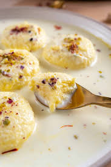

Rasmalai

Description
A classic and traditional Indian dessert recipe made with milk solids and soaked in sweetened milk rabdi. It originates from the eastern part of india
Ingredients
- 2 litre milk
- 2 tbsp vinegar
- 1½ cup sugar
- 3 pod cardamom
- 7 cup water
- few saffron
- ¼ tsp cardamom powder
- 2 tbsp nuts, chopped
Steps
- Firstly, get 2 litre milk to a boil stirring in between to prevent it from burning.
- Add 2 tbsp vinegar and give stir. you will notice the milk starts to curdle.
- Add 1 more tbsp of vinegar and stir until the milk curdles fully separating water.
- Drain off the water over the cheesecloth. you can use any clean cloth here. rinse with cold water to remove sourness and stop cooking.
- Squeeze the paneer gently and hang for 30 minutes.
- Now take the moist paneer and crumble gently.using the palm, start to knead gently.
- Knead until the paneer mixture turns smooth without any grains. do not over-knead here as the rasgulla will turn hard.
- Pinch a small ball sized chenna and prepare smooth crack free balls, flatten slightly.
- Keep the flattened paneer ball aside and cover with a moist cloth
- In a large vessel, take 1½ cup sugar, 3 pods cardamom and 7 cup water.
- Stir and dissolve sugar.now boil the water for 5 minutes or until the syrup turns slightly sticky.
- Drop in a prepared flattened paneer ball keeping the flame on high.cover and boil for 7 minutes or until the size of the ball doubles.
- Chenna has been cooked well. keep aside.
- Firstly, in a large kadai heat 1-litre milk, few saffron and pinch of saffron food colour.
- Stir and get the milk to a boil.continue to cook until the milk thickens slightly.
- Now add ½ cup sugar and continue to boil.
- Do not make very thick milk as it will be difficult for chenna to absorb milk.also, add ¼ tsp cardamom powder and 2 tbsp nuts. mix well.
- Squeeze off the sugar syrup from the cooked paneer balls.place them in a tray and pour in prepared rabdi.
- Rest for at least 4 hours or until the rasmali is soaked well.
- Rest for at least 4 hours or until the rasmali is soaked well.
Home